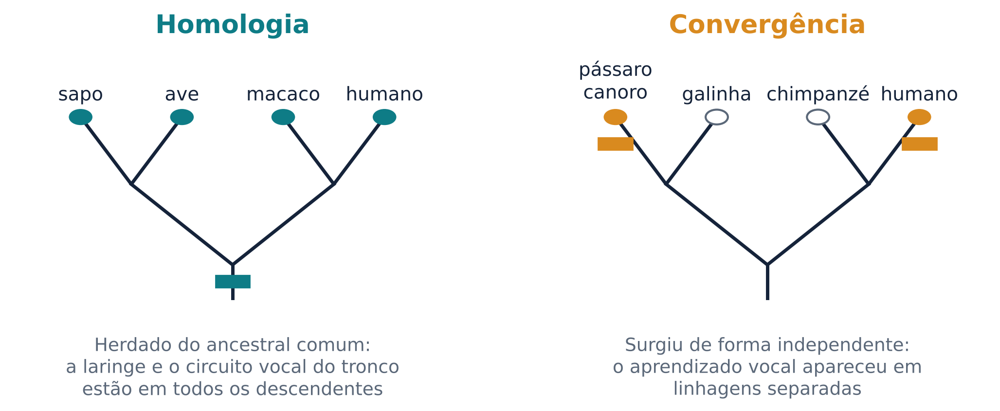
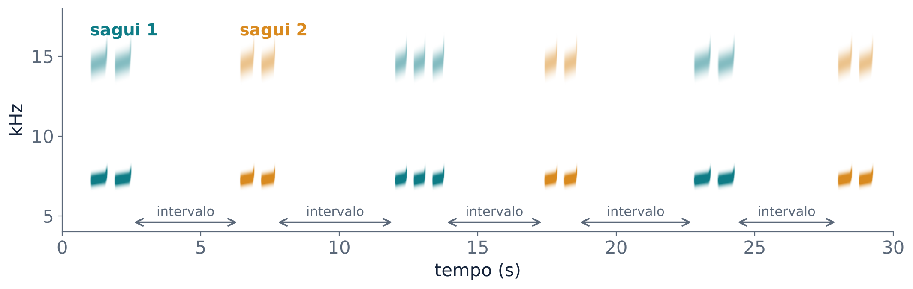
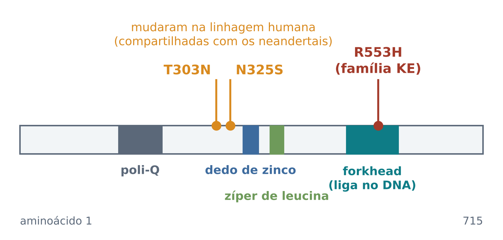
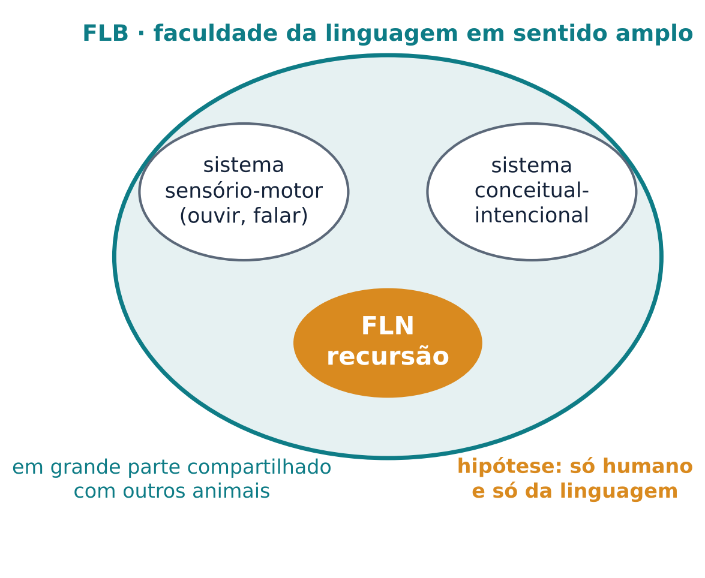
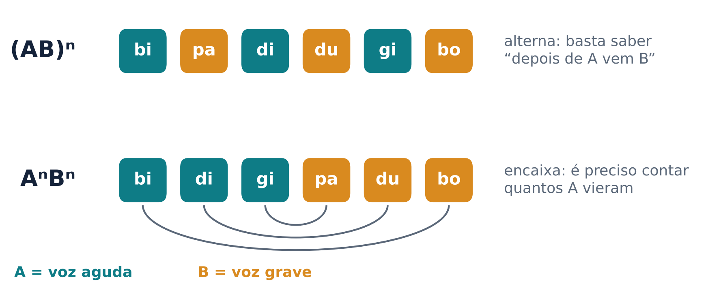
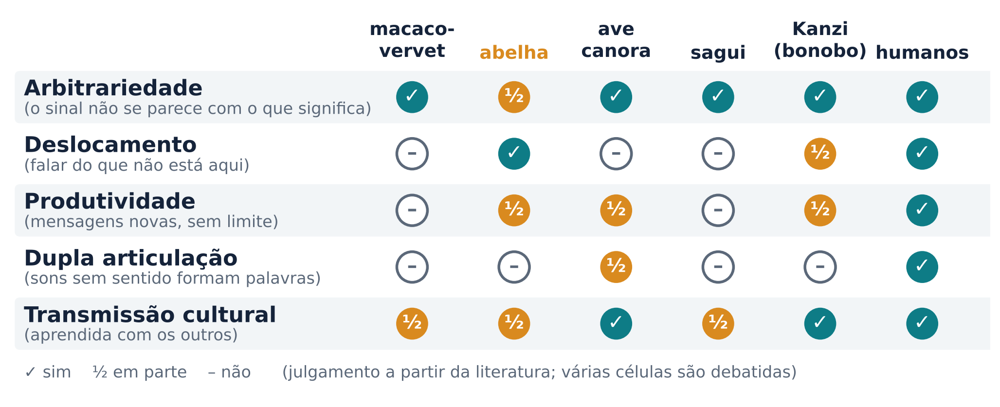

Como estudar a evolução de algo que não fossiliza, o que compartilhamos com outros animais, o que parece só nosso e como as treze aulas se encaixam
Ossos fossilizam; palavras, não. Nenhum fóssil guarda uma conversa. A saída que a biologia encontrou é o método comparativo: comparar características de espécies vivas e interpretar semelhanças e diferenças à luz da árvore da vida, a filogenia, hoje reconstruída sobretudo a partir do DNA (Fitch, 2019, p. 623-624).
O primeiro passo é não tratar a linguagem como um bloco único. Ela depende de vários mecanismos separáveis: ouvir, controlar a voz, aprender sinais, combinar sinais em estruturas, entender a intenção do outro. Muitos desses mecanismos existem em outras espécies, mesmo que a linguagem completa só exista em humanos. É a abordagem de múltiplos componentes (Fitch, 2019, p. 623). Cada componente pode ter uma história evolutiva própria, e a comparação é feita componente por componente.
Duas ideias organizam essa comparação (figura 1). Homologia é uma semelhança herdada de um ancestral comum: o braço humano e a asa do morcego têm os mesmos ossos porque vêm do membro anterior de um mesmo ancestral (Fitch, 2019, p. 624). A homologia funciona como uma “máquina do tempo”: se espécies aparentadas têm o mesmo traço, o ancestral comum provavelmente também tinha. É assim que se reconstroem cérebros e comportamentos de espécies extintas, justamente os traços que não fossilizam (Fitch, 2019, p. 624).
Convergência (ou analogia) é uma semelhança que surgiu de forma independente em linhagens diferentes. Asas de aves, morcegos e moscas servem para voar, mas o ancestral comum desses animais não voava (Fitch, 2019, p. 625). A convergência tem outro valor: cada surgimento independente é um “experimento” separado da natureza. Se uma capacidade apareceu várias vezes, podemos perguntar o que as espécies que a têm compartilham e testar hipóteses sobre o que a favoreceu (Fitch, 2019, p. 625).

As duas categorias podem se misturar. As asas de aves e morcegos são convergentes como asas, mas homólogas como membros anteriores, porque os ossos são os mesmos (Fitch, 2019, p. 626-627). Existe ainda a homologia profunda: genes reguladores antigos reaproveitados para construir estruturas que surgiram de forma independente. O gene Pax6 do camundongo consegue “resgatar” o desenvolvimento do olho de uma mosca mutante, embora olhos de insetos e de vertebrados tenham evoluído separadamente (Fitch, 2019, p. 627). Na seção 4 veremos um caso ligado à fala.
A evolução é uma árvore, não uma escada. É comum imaginar as espécies numa escada, do “primitivo” ao “avançado”, com o humano no topo. Mas todas as espécies vivas tiveram o mesmo tempo de evolução desde o ancestral comum. O ancestral comum de humanos e chimpanzés não era um chimpanzé: era uma espécie extinta, cujas capacidades precisam ser reconstruídas por comparação (Fitch, 2019, p. 629). Não faz sentido, portanto, procurar no chimpanzé uma “versão incompleta” da linguagem.
Aprender a dizer “obrigado” é algo raro no reino animal: produzir um som novo a partir do que se ouviu. Os pesquisadores separam três tipos de aprendizado ligados à voz (Scharff; Knörnschild; Jarvis, 2019, p. 657): o aprendizado de produção vocal (produzir vocalizações novas a partir do que se ouve, ou remodelar as existentes por influência social), o aprendizado de uso (aprender em que contexto usar um som, mesmo inato) e o aprendizado de compreensão (aprender o que um som significa).
O aprendizado de produção é o mais raro. Foi documentado em apenas três ordens de aves (pássaros canoros, papagaios e beija-flores) e cinco de mamíferos (humanos, cetáceos, morcegos, elefantes e pinípedes, como as focas) (Scharff; Knörnschild; Jarvis, 2019, p. 657). Esses grupos estão espalhados pela árvore, e na maioria deles a capacidade parece ter surgido de forma independente, por convergência (Fitch, 2019, p. 627, 630). Hoje ela é vista como um contínuo: de pequenas modificações de vocalizações (em camundongos, cabras e chimpanzés), passando pela influência social sobre o amadurecimento do repertório (em morcegos e saguis), até a imitação completa do canto de muitos pássaros e da fala humana (Scharff; Knörnschild; Jarvis, 2019, p. 659).
Macacos-de-cheiro criados sem ouvir outros da espécie produziram o repertório completo de chamados e o usaram nos contextos adequados; macacos surdos mostraram apenas pequenas mudanças de intensidade e altura (Fischer; Hage, 2019, p. 645). Macacos criados por mães de outra espécie continuam produzindo os chamados da própria espécie, e grandes primatas criados em casas humanas nunca aprenderam a produzir sequer algumas palavras, apesar de imitarem muitas ações com as mãos (Fitch, 2019, p. 629).
Isso não quer dizer que não haja controle nenhum. Macacos rhesus treinados aprenderam a vocalizar quando aparecia um sinal numa tela e até a alternar entre dois tipos de chamado conforme o sinal (Fischer; Hage, 2019, p. 648), e áreas do córtex pré-frontal ventrolateral consideradas homólogas da região de Broca participam desse controle (Fischer; Hage, 2019, p. 650). O que os primatas não humanos quase não fazem é criar sons novos.
Por quê? Durante décadas, a explicação popular foi anatômica: a garganta dos macacos não permitiria os sons da fala. Hoje se sabe que primatas abaixam a laringe ao vocalizar e que o trato vocal de um macaco poderia, com o controle adequado, produzir muitas vogais distinguíveis (Fitch, 2019, p. 630). A hipótese mais aceita é neural: humanos têm conexões diretas do córtex motor para os neurônios que controlam a laringe, no tronco encefálico, e os outros primatas não. As aves que aprendem o canto têm uma conexão direta análoga, ausente nas aves que não aprendem (Fitch, 2019, p. 630).
Nas espécies com aprendizado vocal extenso existe uma via especializada no prosencéfalo, com um componente anterior (córtex, núcleos da base e tálamo), necessário para imitar, e um componente posterior, motor, necessário para produzir os sons aprendidos (Scharff; Knörnschild; Jarvis, 2019, p. 670). A semelhança chega ao nível molecular. O núcleo motor do canto (RA) mostra especializações de expressão gênica convergentes com o córtex motor da laringe humano, e um núcleo do estriado necessário para aprender o canto (a Área X) se parece com uma parte do estriado anterior humano ativada durante a fala; essas especializações não aparecem em espécies com pouco ou nenhum aprendizado vocal (Scharff; Knörnschild; Jarvis, 2019, p. 675).
Os gestos contam outra história. As vocalizações dos primatas não humanos são em grande parte inatas e pouco flexíveis, enquanto os gestos dos grandes primatas são flexíveis, intencionais e ao menos em parte aprendidos (Rossano, 2019, p. 201). Grandes primatas treinados com sinais ou teclados de símbolos aprenderam muitas associações, mas usam os símbolos quase sempre para pedir algo, e raramente para compartilhar informação (Fitch, 2019, p. 632).
O sagui-comum (Callithrix jacchus) é um pequeno macaco do Novo Mundo (Takahashi; Fenley; Ghazanfar, 2016); talvez você já tenha visto alguns em praças e quintais. Saguis vivem em grupos familiares, e o pai e os irmãos mais velhos também carregam os filhotes. Quando se separam, filhotes e adultos emitem chamados que ajudam a restabelecer o contato, e o chamado de um costuma provocar a resposta do outro (Fischer; Hage, 2019, p. 645).
Nos primeiros meses, as vocalizações dos filhotes amadurecem: os chamados ficam mais longos, a frequência cai, a entropia (uma medida de quão ruidoso é o som) diminui e os intervalos entre chamados aumentam (Fischer; Hage, 2019, p. 645). Takahashi e colegas (2015) acompanharam filhotes nos primeiros dois meses e mostraram que os choros e chamados amadurecem de modo muito parecido com o que acontece com bebês humanos. As mudanças acompanham o crescimento das estruturas vocais e são influenciadas pelo retorno dos pais (Takahashi et al., 2015).
Quando o filhote emite um chamado, um dos pais muitas vezes responde logo depois. Uma resposta assim, que vem em seguida ao comportamento do filhote, é chamada de contingente. As respostas contingentes dos pais aceleram o amadurecimento dos chamados (Takahashi et al., 2015; Takahashi; Liao; Ghazanfar, 2017; Fischer; Hage, 2019, p. 645). Takahashi, Liao e Ghazanfar (2017) descreveram esse processo como aprendizado vocal por reforço social: a resposta do adulto funciona como uma recompensa social.
Outro grupo chegou a uma conclusão compatível por outro caminho. Gultekin e Hage (2017) compararam saguis criados normalmente com saguis separados dos pais depois do terceiro mês de vida. Os separados ainda produziam vocalizações típicas de filhotes quando já eram quase adultos. O retorno social, portanto, também ajuda a “podar” o repertório infantil (Gultekin; Hage, 2017; Fischer; Hage, 2019, p. 645). Nos bebês humanos, a interação com os pais também altera as vocalizações: a troca de turnos com o adulto e o retorno dos pais mudam as vocalizações do bebê (Dick et al., 2016, p. 375), como vimos na aula 11. Mesmo um primata que não imita sons novos usa o retorno social para ajustar a voz; por isso os saguis ficam no meio do contínuo da seção 2.
Saguis adultos trocam chamados com as mesmas características gerais da troca de turnos humana: um de cada vez, evitando falar ao mesmo tempo (figura 2) (Takahashi; Fenley; Ghazanfar, 2016). Takahashi, Narayanan e Ghazanfar (2013) mostraram que essa dinâmica pode ser descrita como dois osciladores acoplados. Em termos simples, cada animal tem um ritmo próprio, e os chamados do outro ajustam esse ritmo. A troca de turnos vocal já foi descrita em vários grupos de primatas, de lêmures a gibões, embora de forma irregular ao longo da árvore (Levinson, 2019, p. 195).

A troca de turnos também se desenvolve. Filhotes de sagui passam pela mesma trajetória de mudança que os bebês humanos, na mesma fase da vida; essa maturação depende de o filhote aprender a monitorar a própria voz, e chamados contingentes dos pais provocam chamados mais maduros (Takahashi; Fenley; Ghazanfar, 2016).
Por que saguis, e não chimpanzés, se parecem conosco nesse ponto? Uma hipótese é a criação cooperativa, em que outros membros do grupo, além da mãe, ajudam a cuidar dos filhotes. Pressões desse tipo sobre as duas espécies fariam da troca de turnos de saguis e humanos um caso de convergência (Takahashi; Fenley; Ghazanfar, 2016). A interpretação é debatida: Levinson (2019, p. 197) sugere que o ritmo dos turnos humanos foi herdado de uma linhagem antiga de primatas e que a linguagem teve de se adaptar a ele.
A família britânica conhecida pelas iniciais KE chamou a atenção de geneticistas porque, em três gerações, cerca de metade dos membros tinha a mesma dificuldade grave de fala e linguagem, um padrão compatível com a mutação de um único gene herdada de forma dominante (Fisher, 2016, p. 14). As pessoas afetadas têm apraxia da fala na infância, um problema no planejamento motor das sequências de movimentos da boca e do rosto, mas as dificuldades se estendem à linguagem oral e escrita (Fisher, 2016, p. 14).
Lai e colegas (2001) acharam a causa: a troca de uma única letra do DNA num gene chamado FOXP2. Ele produz um fator de transcrição, uma proteína que se liga ao DNA e regula a atividade de outros genes. A mutação da família KE (R553H) fica no domínio forkhead, a parte da proteína que se liga ao DNA, e prejudica essa ligação; os afetados têm uma cópia normal e uma alterada do gene (Fisher, 2016, p. 14-15). Estudos de imagem cerebral dessas pessoas apontam alterações no estriado, parte dos núcleos da base (Fisher, 2016, p. 19).

O FOXP2 virou manchete como “o gene da linguagem”. A comparação entre espécies mostra por que essa expressão engana:
O FOXP2 não é um interruptor que “liga” a linguagem. Explicações baseadas em “genes da gramática” são insustentáveis diante do que se sabe sobre como os genes funcionam (Fisher, 2016, p. 13). O FOXP2 é uma janela para circuitos antigos que ligam o córtex aos núcleos da base, e é uma peça de um quebra-cabeça complexo, não o gatilho único da linguagem (Fisher, 2016, p. 19-20).
No início dos anos 1990, pesquisadores que registravam neurônios na área F5 do córtex pré-motor de macacos notaram que alguns disparavam tanto quando o macaco executava uma ação com um objeto quanto quando ele via outro indivíduo fazer o mesmo (di Pellegrino et al., 1992). São os neurônios-espelho (Rizzolatti; Rozzi, 2016, p. 63).
Rizzolatti e Arbib (1998) propuseram que esse mecanismo estaria na origem da linguagem. O sistema espelho ligaria diretamente quem emite e quem recebe uma mensagem: o que conta para um conta para o outro, sem necessidade de acordo prévio. A fala teria evoluído a partir de uma comunicação por gestos, e o sistema espelho seria o mecanismo neural dessa passagem (Rizzolatti; Rozzi, 2016, p. 67). A correspondência entre F5 e a região de Broca, porém, não é simples: os próprios autores consideram possível, mas pouco provável, uma homologia direta entre a região de Broca e a área 44 do macaco, e sugerem que algumas funções de F5 teriam “migrado” para a região de Broca na evolução humana (Rizzolatti; Rozzi, 2016, p. 65-66).
A proposta recebeu críticas fortes. Hickok (2009) argumentou que nenhum dado de macacos testa diretamente a ideia de que os neurônios-espelho são a base da compreensão das ações e que os dados de humanos pesam fortemente contra ela. O debate lembra o da teoria motora da percepção da fala (aula 3): participar de uma tarefa não é o mesmo que ser necessário para ela.
Se quase tudo tem algum paralelo em outros animais, o que sobra de exclusivamente humano?
Hauser, Chomsky e Fitch (2002) propuseram separar duas coisas (figura 4). A faculdade da linguagem em sentido amplo (FLB, da sigla em inglês) inclui o sistema sensório-motor, o sistema conceitual-intencional e os mecanismos que permitem gerar infinitas expressões com elementos finitos. A faculdade da linguagem em sentido estrito (FLN) seria a parte exclusiva dos humanos e da linguagem, e a hipótese do artigo é que ela inclui apenas a recursão: a capacidade de encaixar estruturas dentro de estruturas do mesmo tipo, como em “o livro [que o amigo [que você conheceu] me emprestou] sumiu” (Hauser; Chomsky; Fitch, 2002).

O artigo foi, antes de tudo, um convite à comparação entre espécies. Também gerou um debate intenso: Pinker e Jackendoff (2005) argumentaram que a hipótese de que só a recursão é exclusiva deixa de fora muitos outros aspectos especiais da linguagem, e defenderam que ela é uma adaptação complexa para a comunicação.
Para testar a recursão em animais, os pesquisadores usam gramáticas artificiais: sequências de sílabas sem sentido organizadas por uma regra (figura 5). Na regra (AB)ⁿ, sílabas do tipo A e do tipo B se alternam (ABAB). Na regra AⁿBⁿ, vem um número de A seguido do mesmo número de B (AABB, AAABBB), um padrão que lembra o encaixe de frases.

Fitch e Hauser (2004) testaram humanos e saguis-cabeça-de-algodão (Saguinus oedipus). Os macacos dominaram a gramática simples, com regras apenas locais, mas não a de estrutura de frase. Gentner e colegas (2006) relataram que estorninhos, um pássaro canoro, aprenderam a distinguir as duas, e mandarins também conseguiram fazer a distinção (ten Cate; Petkov, 2019, p. 696). Mas a análise dos mandarins mostrou que eles resolviam a tarefa usando pistas locais, como a presença de dois A seguidos (que só existe em AⁿBⁿ), e não a estrutura completa (ten Cate; Petkov, 2019, p. 696). A maior parte das alegações de que animais processam estruturas desse tipo foi contestada por explicações mais simples, embora macacos treinados intensamente tenham aprendido uma gramática desse nível com estímulos visuais (Fitch, 2019, p. 631).
No cérebro humano, as áreas de Brodmann 44 e 45 (parte da região de Broca) são muito maiores que no chimpanzé: a área 44 esquerda é cerca de 6,6 vezes maior e a 45, cerca de 6 vezes. Essas regiões também têm conexões muito mais extensas com os lobos parietal e temporal (Fitch, 2019, p. 631), o que lembra a via dorsal vista na aula 6.
Animais também combinam sinais. O chapim-japonês, um pássaro, tem um chamado ABC, que faz os outros vasculharem o ambiente, e um chamado D, que faz os outros se aproximarem. A sequência ABC-D provoca as duas respostas; a ordem invertida, nenhuma (ten Cate; Petkov, 2019, p. 691). É uma forma rudimentar de composicionalidade: o sentido do todo vem das partes e da ordem.
Outro candidato a diferença humana está no lado social. Crianças usam a linguagem para compartilhar informação, e humanos têm forte tendência à atenção conjunta e à intencionalidade compartilhada (fazer coisas juntos, com um objetivo comum), além de sinalizar abertamente que estão tentando comunicar (Fitch, 2019, p. 632). Grandes primatas, por exemplo, não usam o gesto de apontar para informar uns aos outros, algo que todos os humanos fazem (Rossano, 2019, p. 202).
A visão de mosaico. Nenhum animal estudado reúne todos os componentes da linguagem, mas quase todo componente tem algum paralelo: aprendizado vocal nas aves, troca de turnos nos saguis, combinação de chamados nos chapins. Uma resposta possível para “o que é único?” é a combinação desses componentes numa só espécie. Se essa combinação veio de um único salto ou do acúmulo de muitos passos continua em debate (Scharff; Knörnschild; Jarvis, 2019, p. 657; ten Cate; Scharff, 2019, p. 713).
O etólogo Niko Tinbergen propôs que todo comportamento pode ser estudado por quatro perguntas complementares: mecanismo (que processos o produzem?), desenvolvimento (como se forma ao longo da vida?), função (que vantagem traz?) e evolução (qual é a sua história na árvore das espécies?) (Fitch, 2019, p. 626).
As respostas não competem entre si. Tome a troca de turnos dos saguis. Mecanismo: uma dinâmica de osciladores acoplados (Takahashi; Narayanan; Ghazanfar, 2013). Desenvolvimento: ela amadurece no início da vida, com participação dos pais (Takahashi; Fenley; Ghazanfar, 2016). Função: manter o contato com quem não está à vista (Fischer; Hage, 2019, p. 645). Evolução: talvez uma convergência com humanos ligada à criação cooperativa, talvez uma herança antiga dos primatas (seção 3).
O curso cabe nessas perguntas: as aulas 3 a 7 trataram de mecanismos (do ouvido às palavras, frases e escrita); as aulas 8 a 10 levaram ao corpo, à voz e à conversa, perto da função; a aula 11 tratou do desenvolvimento; a 12, dos mecanismos vistos pela falha; e esta, da evolução.
Na aula 1 a pergunta foi: a dança das abelhas é uma linguagem? Os traços que Charles Hockett usou para comparar a linguagem humana com outros sistemas, entre eles o canto dos pássaros e a própria dança (Fitch, 2019, p. 623), ajudam a responder (figura 6).

Uma conclusão defensável é que a dança é um sistema de comunicação referencial, com deslocamento, mas não uma linguagem no sentido humano (Fitch, 2019, p. 623). A pergunta mais interessante, porém, não é “sim ou não”, e sim “quais componentes ela compartilha com a linguagem?”.
Uma frase para levar. Não existe “a área da linguagem” nem “o gene da linguagem”. Existe uma rede de regiões que se constrói no desenvolvimento, funciona na interação com outras pessoas, falha de modos específicos quando é lesada e tem uma história evolutiva em mosaico, com partes herdadas, partes convergentes e partes que talvez sejam só nossas.
Experimento 1: troca de turnos. Vocês tocavam na tela quando achavam que um assobio parecido com o phee tinha terminado. Na parte A os chamados tinham sempre a mesma duração; na parte B, não. Na parte A, o esperado é que muitos tenham aprendido o ritmo e passado a antecipar o fim, com intervalos curtos e algumas sobreposições. Na parte B só restava esperar o silêncio, e os intervalos tendem a ser maiores, perto de um tempo de reação simples. Em conversas reais, o intervalo mais comum entre turnos fica em torno de 200 ms, com diferenças pequenas entre dez línguas de cinco continentes. Como planejar e começar a dizer uma palavra leva cerca de 600 ms, e uma oração 1.000 ms ou mais, quem vai falar precisa planejar a resposta enquanto o outro ainda fala, prevendo o conteúdo e o momento em que o turno vai acabar (Levinson, 2019, p. 191; Rossano, 2019, p. 204). Os saguis seguem regras parecidas (alternar, evitar sobreposição), com intervalos bem mais longos; o botão “diálogo de dois saguis” dá uma ideia dessa escala.
Experimento 2: gramáticas artificiais. No bloco 1, com (AB)ⁿ, o esperado é um desempenho quase perfeito. No bloco 2, com AⁿBⁿ, muitas pessoas rejeitam com facilidade as sequências alternadas, mas aceitam sequências como AAABB, em que o número de A e de B não bate. Uma regra mais simples (“primeiro os A, depois os B”) acerta quase tudo sem contar. É a crítica feita aos estudos com animais: passar num teste AⁿBⁿ não prova que a estrutura encaixada foi representada (ten Cate; Petkov, 2019, p. 696). Quem rejeitou AAABB provavelmente contou.
Experimento 3: é linguagem? A grade de referência (figura 6) é um julgamento, não um gabarito; as discordâncias costumam aparecer nos pontos debatidos, como a arbitrariedade da dança. O esperado é que menos pessoas respondam “linguagem” do que na aula 1. O que importa é a justificativa.
Experimento 4: homologia ou convergência. Os erros costumam se concentrar nos casos em que o comportamento e os genes ou circuitos contam histórias diferentes, como o FOXP2 e o estriado: o aprendizado vocal é convergente, mas reaproveita um gene e uma estrutura homólogos (seção 4).
Experimento 5: uma ideia por aula. Confusões entre aulas vizinhas são esperadas e mostram o que vale revisar antes da avaliação.
O chimpanzé é nosso parente mais próximo, mas é o papagaio que imita a fala. Explique por que isso não é uma contradição.
Resposta
O aprendizado vocal não foi herdado de um ancestral comum de humanos e papagaios: ele surgiu de forma independente em algumas linhagens, por convergência. Parentesco próximo não garante semelhança em cada componente. Os chimpanzés têm pouco controle cortical sobre a laringe, enquanto papagaios e humanos têm vias neurais que permitem imitar sons novos.
Por que a convergência é útil para testar hipóteses sobre a evolução, e não apenas uma curiosidade?
Resposta
Cada surgimento independente de um traço é um dado separado. Se o aprendizado vocal surgiu em várias linhagens, podemos procurar o que elas têm em comum (circuitos, genes, modo de vida) e testar se essas características acompanham o traço. Traços homólogos, por mais difundidos que sejam, representam um único evento evolutivo.
Durante muito tempo se disse que macacos não falam porque sua garganta não permite. Que dados enfraqueceram essa explicação e qual é a alternativa?
Resposta
Primatas abaixam a laringe ao vocalizar, e o trato vocal de um macaco poderia produzir muitas vogais distinguíveis se houvesse controle neural adequado. A alternativa é neural: humanos (e aves que aprendem o canto) têm conexões diretas do córtex motor para os neurônios que controlam o órgão vocal, ausentes nos outros primatas.
Os saguis não imitam sons novos como os pássaros canoros. Então por que o desenvolvimento vocal deles interessa a quem estuda a fala humana?
Resposta
Porque mostra que o retorno social contingente ajusta a vocalização mesmo num primata sem imitação vocal extensa. As respostas dos pais aceleram o amadurecimento dos chamados, e a falta desse retorno deixa vocalizações infantis no repertório. Algo parecido acontece com o balbucio dos bebês, o que sugere que o aprendizado vocal é um contínuo, não algo que se tem ou não se tem.
Explique, usando a ideia de homologia profunda, por que o FOXP2 pode ser homólogo em aves e humanos enquanto o aprendizado vocal é convergente.
Resposta
O gene FOXP2 existe em muitos vertebrados e foi herdado de um ancestral comum (homologia). O aprendizado vocal surgiu de forma independente em aves e humanos (convergência), mas nas duas linhagens os circuitos que o sustentam reaproveitaram esse gene antigo, que atua em circuitos que ligam córtex e estriado. A mesma capacidade pode ser convergente no comportamento e homóloga nos genes.
Que argumento de Hickok pesa contra a ideia de que os neurônios-espelho explicam a origem da linguagem?
Resposta
Hickok argumenta que nenhum dado de macacos testa diretamente se os neurônios-espelho são a base da compreensão de ações, e que os dados de humanos pesam contra essa ideia. Mostrar que uma região se ativa ao observar ações não prova que ela é necessária para entendê-las.
No experimento 2, por que aceitar a sequência AAABB indica que a pessoa usou uma regra mais simples que AⁿBⁿ? O que isso tem a ver com os estudos em animais?
Resposta
AAABB segue a regra “primeiro os A, depois os B”, mas tem números diferentes de A e B. Quem a aceita não estava casando cada A com um B. Nos estudos com animais, aves que pareciam ter aprendido AⁿBⁿ usavam pistas locais, como dois A seguidos, o que mostra que acertar o teste não prova que a estrutura encaixada foi representada.
Responda com as quatro perguntas de Tinbergen: por que os saguis trocam turnos?
Resposta
Mecanismo: uma dinâmica de osciladores acoplados entre os dois animais. Desenvolvimento: a troca de turnos amadurece no início da vida, com participação dos pais. Função: manter contato com quem não está à vista. Evolução: possivelmente uma convergência com humanos ligada à criação cooperativa (ou, segundo outra visão, uma herança antiga dos primatas). As respostas se complementam.
ATKINSON, E. G. et al. No evidence for recent selection at FOXP2 among diverse human populations. Cell, v. 174, n. 6, p. 1424-1435.e15, 2018. DOI: https://doi.org/10.1016/j.cell.2018.06.048.
DI PELLEGRINO, G. et al. Understanding motor events: a neurophysiological study. Experimental Brain Research, v. 91, n. 1, p. 176-180, 1992. DOI: https://doi.org/10.1007/BF00230027.
DICK, F. et al. Language development. In: HICKOK, G.; SMALL, S. L. (org.). Neurobiology of language. London: Academic Press, 2016. p. 373-388. DOI: https://doi.org/10.1016/B978-0-12-407794-2.00031-6.
DONG, S. et al. Social signal learning of the waggle dance in honey bees. Science, v. 379, n. 6636, p. 1015-1018, 2023. DOI: https://doi.org/10.1126/science.ade1702.
FISCHER, J.; HAGE, S. R. Primate vocalization as a model for human speech: scopes and limits. In: HAGOORT, P. (org.). Human language: from genes and brains to behavior. Cambridge, MA: MIT Press, 2019. p. 639-656.
FISHER, S. E. A molecular genetic perspective on speech and language. In: HICKOK, G.; SMALL, S. L. (org.). Neurobiology of language. London: Academic Press, 2016. p. 13-24. DOI: https://doi.org/10.1016/B978-0-12-407794-2.00002-X.
FITCH, W. T. The comparative approach to the biology and evolution of language. In: HAGOORT, P. (org.). Human language: from genes and brains to behavior. Cambridge, MA: MIT Press, 2019. p. 623-637.
FITCH, W. T.; HAUSER, M. D. Computational constraints on syntactic processing in a nonhuman primate. Science, v. 303, n. 5656, p. 377-380, 2004. DOI: https://doi.org/10.1126/science.1089401.
FRISCH, K. von. Decoding the language of the bee. Science, v. 185, n. 4152, p. 663-668, 1974. DOI: https://doi.org/10.1126/science.185.4152.663.
GENTNER, T. Q. et al. Recursive syntactic pattern learning by songbirds. Nature, v. 440, n. 7088, p. 1204-1207, 2006. DOI: https://doi.org/10.1038/nature04675.
GULTEKIN, Y. B.; HAGE, S. R. Limiting parental feedback disrupts vocal development in marmoset monkeys. Nature Communications, v. 8, 14046, 2017. DOI: https://doi.org/10.1038/ncomms14046.
HAUSER, M. D.; CHOMSKY, N.; FITCH, W. T. The faculty of language: what is it, who has it, and how did it evolve? Science, v. 298, n. 5598, p. 1569-1579, 2002. DOI: https://doi.org/10.1126/science.298.5598.1569.
HICKOK, G. Eight problems for the mirror neuron theory of action understanding in monkeys and humans. Journal of Cognitive Neuroscience, v. 21, n. 7, p. 1229-1243, 2009. DOI: https://doi.org/10.1162/jocn.2009.21189.
HOCKETT, C. F. The origin of speech. Scientific American, v. 203, n. 3, p. 88-96, 1960. DOI: https://doi.org/10.1038/scientificamerican0960-88.
LAI, C. S. L. et al. A forkhead-domain gene is mutated in a severe speech and language disorder. Nature, v. 413, n. 6855, p. 519-523, 2001. DOI: https://doi.org/10.1038/35097076.
LEVINSON, S. C. Interactional foundations of language: the interaction engine hypothesis. In: HAGOORT, P. (org.). Human language: from genes and brains to behavior. Cambridge, MA: MIT Press, 2019. p. 189-200.
PINKER, S.; JACKENDOFF, R. The faculty of language: what’s special about it? Cognition, v. 95, n. 2, p. 201-236, 2005. DOI: https://doi.org/10.1016/j.cognition.2004.08.004.
RIZZOLATTI, G.; ARBIB, M. A. Language within our grasp. Trends in Neurosciences, v. 21, n. 5, p. 188-194, 1998. DOI: https://doi.org/10.1016/S0166-2236(98)01260-0.
RIZZOLATTI, G.; ROZZI, S. Motor cortex and mirror system in monkeys and humans. In: HICKOK, G.; SMALL, S. L. (org.). Neurobiology of language. London: Academic Press, 2016. p. 59-72. DOI: https://doi.org/10.1016/B978-0-12-407794-2.00006-7.
ROSSANO, F. The structure and timing of human versus primate social interaction. In: HAGOORT, P. (org.). Human language: from genes and brains to behavior. Cambridge, MA: MIT Press, 2019. p. 201-219.
SCHARFF, C.; KNÖRNSCHILD, M.; JARVIS, E. D. Vocal learning and spoken language: insights from animal models with an emphasis on genetic contributions. In: HAGOORT, P. (org.). Human language: from genes and brains to behavior. Cambridge, MA: MIT Press, 2019. p. 657-685.
TAKAHASHI, D. Y. et al. The developmental dynamics of marmoset monkey vocal production. Science, v. 349, n. 6249, p. 734-738, 2015. DOI: https://doi.org/10.1126/science.aab1058.
TAKAHASHI, D. Y.; FENLEY, A. R.; GHAZANFAR, A. A. Early development of turn-taking with parents shapes vocal acoustics in infant marmoset monkeys. Philosophical Transactions of the Royal Society B: Biological Sciences, v. 371, n. 1693, 20150370, 2016. DOI: https://doi.org/10.1098/rstb.2015.0370.
TAKAHASHI, D. Y.; LIAO, D. A.; GHAZANFAR, A. A. Vocal learning via social reinforcement by infant marmoset monkeys. Current Biology, v. 27, n. 12, p. 1844-1852.e6, 2017. DOI: https://doi.org/10.1016/j.cub.2017.05.004.
TAKAHASHI, D. Y.; NARAYANAN, D. Z.; GHAZANFAR, A. A. Coupled oscillator dynamics of vocal turn-taking in monkeys. Current Biology, v. 23, n. 21, p. 2162-2168, 2013. DOI: https://doi.org/10.1016/j.cub.2013.09.005.
TEN CATE, C.; PETKOV, C. I. The grammatical abilities of animals: a comparative overview. In: HAGOORT, P. (org.). Human language: from genes and brains to behavior. Cambridge, MA: MIT Press, 2019. p. 687-700.
TEN CATE, C.; SCHARFF, C. Key issues and future directions: the comparative approach to language. In: HAGOORT, P. (org.). Human language: from genes and brains to behavior. Cambridge, MA: MIT Press, 2019. p. 713-718.
Material de estudo da disciplina Bases neurais da comunicação humana (UFRN), Prof. Daniel Y. Takahashi. Texto e figuras elaborados para o curso; as fontes estão nas Referências.